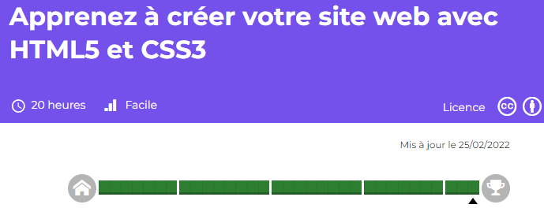

- 2022 - CERTIFICAT OpenClassrooms

- 1995 - BTS Informatique Industrielle
Lycée polyvalent international, Colomiers
- Activités
- Proposer des solutions informatiques pour répondre à des processus industriels
- Réaliser l'analyse fonctionnelle de l'installation à partir d'un cahier des charges
- Assurer la mise en œuvre des développements informatiques (software, hardware)
- Assurer la maintenance des applications
- Déterminer le matériel de l'automatisation et les logiciels
- Assurer une veille technologique
- Compétences
- Maîtrise des outils d'exploitation constructeurs
- Maîtrise de l'architecture de systèmes d'informatique industrielle
- Maîtrise des langages de développement informatique (C, C++, VisualBasic, Assembleur)
- Connaissance de logiciels de CAO et DAO
- Connaissance de la réglementation normative
- Connaissance des produits et logiciels de l'entreprise
- Gestion de projet
- Maîtrise de l'anglais technique
- 1993 - Baccalauréat F3 Electrotechnique - Mention BIEN
Lycée polyvalent international, Colomiers
retour accueil